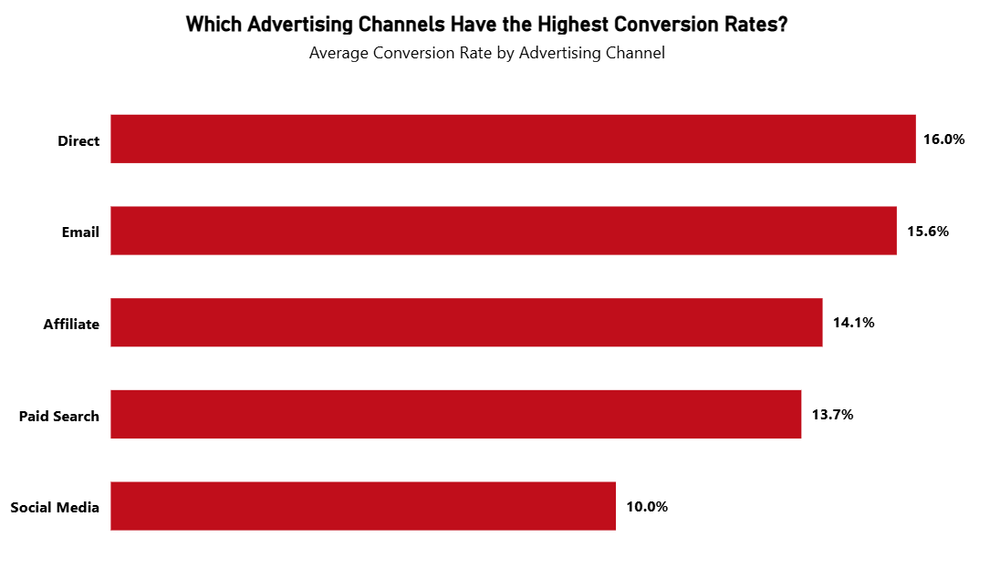

Conversion Rate
Description
Conversion Rate measures the percentage of users, leads, or visitors who take a desired action. This action could be purchasing a product, submitting a contact form, signing up for a service, or completing a transaction. It is one of the most critical KPIs for evaluating the effectiveness of marketing campaigns, user flows, and sales funnels. A higher conversion rate generally indicates more efficient targeting, messaging, or user experience.
Visual Example

DAX Formulas
SQL Statement
Usage Notes
- Ensure that “Converted Users” and “Total Users” are defined consistently (e.g., based on event tracking, transactions, or lead stages).
- Filter by campaign, region, device type, or landing page to find conversion drivers.
- Use this KPI in combination with volume-based KPIs (like traffic or leads) for better context.
- When visualizing over time, use week or month aggregation to identify trends.